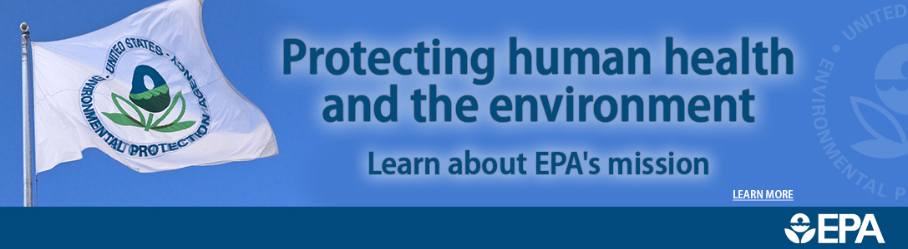

El 22 de abril de cada año se celebra el nacimiento del movimiento ambientalista moderno, el cual se inició en 1970 cuando 20 millones de norteamericanos tomaron las calles, los parques y los auditorios para manifestarse por un ambiente saludable y sustentable
El Día de la Tierra de 1970 logró una coincidencia política que parecía imposible. Ese día condujo a la creación de la Agencia de Protección al Medio Ambiente de Estados Unidos y a la aprobación de leyes relacionadas con el aire limpio, el agua limpia y la conservación de especies en peligro de extinci&aocute;n. A partir de entonces, cada año en esta fecha, el mundo entero reflexiona y se moviliza por una Tierra mejor.
Hasta este siglo pocos pensaron que los seres humanos, viviendo en una extensión de tierra aparentemente sin límites y con agua abundante, podrían causar daños irreparables al medio ambiente. Sin embargo hoy los gobiernos y la gente en general en todo el mundo luchan con la erosión costera, los derrames de petróleo y la contaminación del agua potable, en tanto que cuestiones como el crecimiento de la población, la deforestación, la lluvia ácida y la posibilidad de rápidos cambios climáticos significan decisiones difíciles para el futuro.
En 1975 un grupo internacional de estudio reunido en Belgrado, Yugoslavia, propuso un marco de referencia mundial para la educación ambiental, el cual se llamó la "Carta de Belgrado". Esta Carta afirma que la meta de la educación ambiental es hacer que la población mundial se preocupe por el medio ambiente y tenga el conocimiento y la dedicación que la capacite para buscar soluciones a los problemas actuales y prevenir problemas nuevos. .

En 1968, Morton Hilbert y el U.S. Public Health Service (Servicio de Salud Pública de E.E.U.U.), organizaron el Simposio de Ecología Humana, se realiza una conferencia por los nombrados anteriormente para una asamblea o conferencia medioambiental para que estudiantes escucharan a científicos hablar sobre los efectos del deterioro ambiental en la salud humana.2 Este fue el primer antecedente del Día de la Tierra. Durante los siguientes dos años, Hilbert y sus estudiantes trabajaron para planear el primer Día de la Tierra.3 Surgieron otros esfuerzos como Survival Project (Proyecto para la Supervivencia), uno de los primeros eventos educacionales de conciencia ambiental, que fue llevado a cabo en la Universidad Northwestern el 23 de enero de 1970. Este fue el primero de varios eventos realizados en campus universitarios por todo Estados Unidos. Así mismo, Ralph Nader empezó a hablar acerca de la importancia de la ecología en 1970.

La primera manifestación tuvo lugar el 22 de abril de 1970, promovida por el senador y activista ambiental Gaylord Nelson, para la creación de una agencia ambiental. En esta convocatoria participaron dos mil universidades, diez mil escuelas (primarias y secundarias) y centenares de comunidades. La presión social tuvo sus logros y el gobierno de los Estados Unidos creó la Environmental Protection Agency (Agencia de Protección Ambiental) y una serie de leyes destinadas a la protección del medio ambiente.4


En 1972 se celebró la primera conferencia internacional sobre el medio ambiente. La Cumbre de la Tierra de Estocolmo cuyo objetivo fue sensibilizar a los líderes mundiales sobre la magnitud de los problemas ambientales.
Actualmente esta celebración, esta siendo opacada en Los Estados Unidos de America, por Donald John Trump; así como lo ha hecho con diversos programas relacionados, en el corto tiempo que lleva en la presidencia de dicho país.
Qué es la conciencia ecológica. A partir del momento en que el hombre comenzó a apropiarse de la naturaleza para darle forma a sus necesidades y caprichos, los ecosistemas de todo el planeta dieron su respuesta ante este tipo de abusos, a través de consecuencias negativas como la contaminación y la pérdida de biodiversidad.
tener conciencia ecológica es entender que somos dependientes de la naturaleza y responsables por su estado de conservación. Ignorar esta verdad equivale a autodestruirnos, porque al degradar el medio ambiente estamos empeorando nuestra calidad de vida y poniendo en peligro el futuro de nuestros descendientes.


Al contrario de lo que se podría pensar, desarrollo económico y conciencia ecológica no tienen por qué ser antónimos. Se puede producir de manera sustentable, fomentar la generación de energías limpias, reducir y reciclar la basura y reutilizar un gran número de materiales que producirán nuevos productos útiles para el día a día del hombre moderno.

Biodiversidad significa variedad de vida, tanto de los ecosistemas como de especies e individuos, incluidos todos los tipos de vida. La biodiversidad es el producto de los procesos evolutivos de los seres vivos. Nuestro planeta alberga una cantidad de especies, tanto vegetales como animales, las cuales viven en múltiples hábitats naturales, que cuando se alteran o destruyen, ocasionan la perdida de biodiversidad.
Infundir respeto por el medio ambiente a las generaciones más jóvenes es una obligación moral de los mayores, de la sociedad en general, ya sea en forma de políticas como mediante la enseñanza en los colegios o con el ejemplo en su entorno más próximo. No en vano, ellos son el futuro y de esa transmisión de valores dependerá el futuro del planeta.
¿Pero, cómo hacerlo? Generar conciencia ecológica en los jóvenes va más allá de campañas puntuales que inviten a reciclar o de declaraciones en favor del medio ambiente de boca de sus ídolos. Aunque todo ayuda, en realidad sólo una educación que empiece en la más tierna infancia logrará el objetivo: que sean ciudadanos informados, con espíritu crítico, porque sólo entendiendo y amando a la naturaleza se contribuirá a su preservación.
Los primeros años son fundamentales. En el seno de la familia o en los colegios es donde se socializa al niño, el periodo en el que se desarrolla se personalidad y se le orienta para un mejor desarrollo. Los valores, los conocimientos y las actitudes que inculquen el respeto por los demás (lo que incluye la Naturaleza) se transmitirán a través de cuentos, actividades escolares y, de forma especial, a través de la convivencia familiar.
Para garantizar la sostenibilidad del planeta no solo es necesario apostar por las energías renovables que existen en países como el nuestro (eólica, solar, etc.). También es importante que los consumidores adquieran una conciencia ecológica que acabe con el calentamiento global y otros problemas que arrastramos desde hace años.
Puede parecer que una solo persona no es capaz de cambiar el mundo. En parte eso es cierto, y digo en parte porque cada uno de nosotros debe aportar su granito de arena para que el mundo sea un poco mejor. ¿Cómo? Comprando productos ecológicos, por ejemplo.


Celebramos el Día Internacional de la Madre Tierra para recordar que el planeta y sus ecosistemas nos dan la vida y el sustento.
Con esta celebración admitimos la responsabilidad colectiva, como nos recordaba la Declaración de Río de 1992, de fomentar la harmonía con la naturaleza y la Madre Tierra para alcanzar el equilibrio justo entre las necesidades económicas, sociales y medioambientales de las generaciones presentes y futuras.
Este día nos brinda la oportunidad de concienciar a todos los habitantes del planeta acerca de los problemas que afectan a la Tierra y a las diferentes formas de vida que en él se desarrollan.
En 2017, la campaña se denomina «Alfabetización medioambiental y climática».
La educación constituye los cimientos del progreso. Necesitamos que la ciudadanía mundial conozca los conceptos sobre el cambio climático y sea consciente de la amenaza sin precedentes para el planeta. El conocimiento nos empoderará a todos y nos llevará a tomar medidas para defender el medio ambiente.
La alfabetización medioambiental y climática no es solo el motor que genera votantes concienciados por las cuestiones ecológicas y promueve legislación en este ámbito, sino que también acelera el desarrollo de tecnologías y empleos respetuosos con el medio ambiente.


El destino de la humanidad depende de la diversidad biológica, de la riqueza y variedad de los seres vivos del planeta. Ésta es esencial para el desarrollo sostenible y para el bienestar de los humanos, y clave para reducir la pobreza.
HUMBERTO CLARA GOMEZ
4"E"
SUBMODULO:DESARROLLA APLICACIONES MOVILES
(DAM)
LIC. JOSE ARTURO GÓMEZ HERNANDEZ


 1
1 2
2 3
3 4
4 5
5 6
6 7
7


 1
1 2
2 3
3 5
5 6
6 7
7